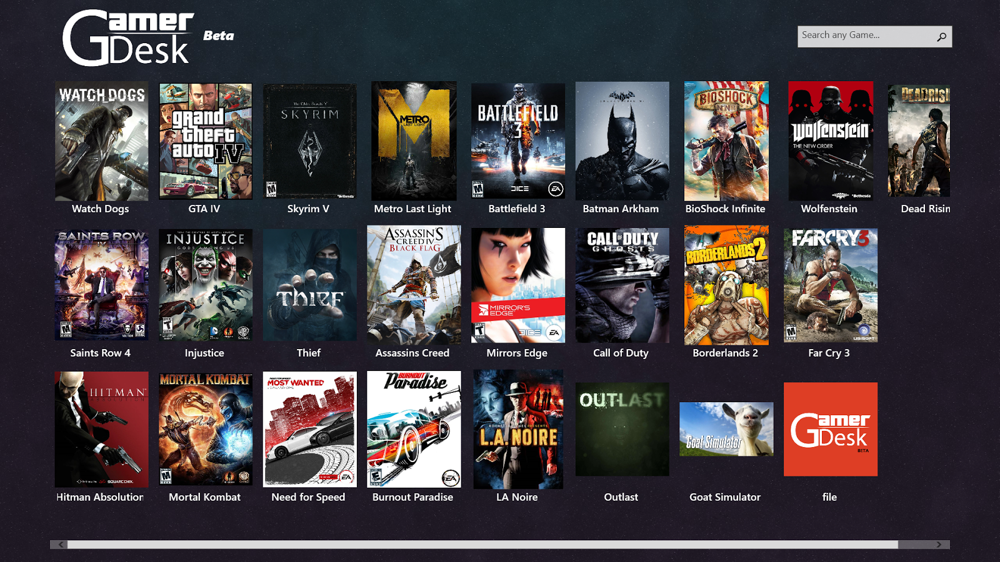

# vaporObjetos
#ejemplo examen Vapor pdep
Paradigmas de Programación Jueves Mañana - Parcial Paradigma de Objetos - 03/11/2016 - Hoja de
Vapor®
Vapor® es un sistema que permite que una persona pueda comprar, instalarse y jugar los juegos que quiera. A Vapor® le interesa premiar a sus usuarios con logros cada vez que juegan, para seguir sacándoles dinero darles una mejor experiencia.
Cada logro que un usuario haya ganado usando su cuenta, tiene cierta cantidad de gemas. Los logros pueden ser los siguientes:
- Avance: los logros de avance otorgan tantas gemas como tiempo que se jugó al juego en esta oportunidad * dificultad (que es un valor numérico) que tenía el juego al momento de entregar ese logro.
- Secreto Desbloqueado: cada uno de los logros de secreto desbloqueado otorga una cantidad diferente de gemas.
- Experiencia Alcanzada: otorgan tantas gemas como la décima parte de la experiencia gamer que se haya alcanzado al momento de recibir el logro, sumado a la dificultad del juego en ese instante.
Para cada logro, debemos conocer qué juego lo otorgó. Y una vez obtenido el logro, no se puede modificar ninguna de sus características (por ejemplo, un logro de avance siempre tendrá la dificultad del juego en aquél momento).
Para cada juego, se conoce su nivel de dificultad, y una cantidad de sangre que aparece por hora jugada.
La experiencia gamer de un jugador es la cantidad total de horas jugadas * 25, y aumenta cada vez que juega (debido a que aumenta la cantidad de horas jugadas).
Parte 1
Se pide la codificación completa para los siguientes puntos.
Además, indicar un ejemplo de uso[1] en cada uno.
- Saber cuántas gemas tiene un jugador. Esto es la suma de las gemas que le otorga cada logro obtenido.
- Hacer que un jugador compre un juego. Cada juego tiene cierto valor.
- Si no puede comprarlo, se debe lanzar una excepción. Puede comprarlo únicamente si lo que tiene en su billetera virtual + sus gemas (1 gema = $1) es suficiente para lo que cuesta el juego. Tampoco puede comprar un juego si es que ya lo había comprado.
- Si puede comprarlo pero no le alcanza el dinero de la billetera, primero debe transformar todos sus logros en dinero (sí, todos) y luego gastar en el juego.
- Sabiendo que un logro es importante cuando otorga más de 500 gemas (salvo los logros de avance, que nunca son importantes), conocer en qué juegos se obtuvieron logros importantes.

Si el juego es rosita no nos interesa, ya que no podemos alardear con algo así.
Es rosita si tiene menos de 1 litro de sangre por hora o la dificultad es 2 o menos.
¡Pausa (parte 2)!
Esto se está volviendo complejo así que necesitamos hacer lo siguiente:
- Escribir un test que pruebe el funcionamiento correcto de la compra cuando no se puede comprar. Solo probar uno de los dos casos.
- Hacer un diagrama de clases de la solución hasta este punto. No hace falta escribir ni setters ni getters, pero sí los demás métodos, y todas las referencias, indicando si son constantes o variables.
- Suponiendo que un jugador tiene 0 dinero pero varios logros, hacer dos diagramas de objetos: uno antes de comprar un juego, y uno después.
Parte 3
Un juego puede ser de Aventura, Pelea, FPS o de Lógica. Pero Vapor® le va a hacer reformas a sus juegos, con expansiones, hitos especiales, remakes y demás, así que un mismo juego debe poder cambiar de estilo.
Cuando se juega a un juego por cierta cantidad de horas, se pueden obtener logros.
Todo juego otorga un logro de experiencia alcanzada, si la experiencia gamer es múltiplo de 100 al finalizar el tiempo jugado. Y además, según qué juego sea, puede otorgar más logros aún:
- Juegos de Aventura: Siempre se otorga un “Secreto Desbloqueado”, con tantas gemas como 1 / experiencia gamer tenga el jugador luego de jugar.
- Juegos de Pelea: Lo importante es practicar combos cada vez más rápidos, así que siempre se otorga un logro de Avance por el tiempo que haya jugado esta oportunidad. Además, si la sangre total (cantidad de horas jugadas * sangre por hora) es mayor a 10, se le revela un Secreto sobre cómo hacer algún golpe especial y se le otorga ese logro también, con una cantidad de gemas igual a la cantidad total de horas que haya jugado el jugador en su vida / 10.
- Juegos de Lógica: Si la cantidad de horas jugadas * la dificultad del juego es mayor a 17, se premia ese esfuerzo con un logro Genio, que es como un logro de Experiencia Alcanzada, solo que otorga el doble de gemas + cantidad de logros obtenidos por el jugador hasta antes de recibir este premio.
- Juegos de FPS: No agrega ningún logro más. No se necesitan logros, solo la inmensa satisfacción de haber hecho un headshot a través de una ventana a 100m y en movimiento.
Se pide la codificación completa y ejemplo de uso para:
- Jugar un juego por una determinada cantidad de horas.
Por ejemplo, si Cacho (que tiene 8 horas jugadas) juega por 4 horas al Tetris, que es un juego de lógica con dificultad 5, obtiene 2 logros: Un logro de Experiencia Alcanzada (porque su experiencia gamer será 300) y un logro Genio, porque 4 * 5 > 17. - Instalar la expansión de un juego. Esto hace que el juego aumente en 1 su dificultad, y además si el juego es de aventura pasa a ser de pelea.
- Definir polimorfismo, dar un buen ejemplo y justificar la elección.
[1]Ejemplo de uso: Mostrar quién/es deberían realizar la/s tareas más importantes en cada caso, enviándoles los mensaje tal como si lo escribieran en la consola. Ejemplo, si nos piden que hagamos volar a una golondrina cierta cantidad de kilómetros, escribiríamos “pepita.volá(2)”